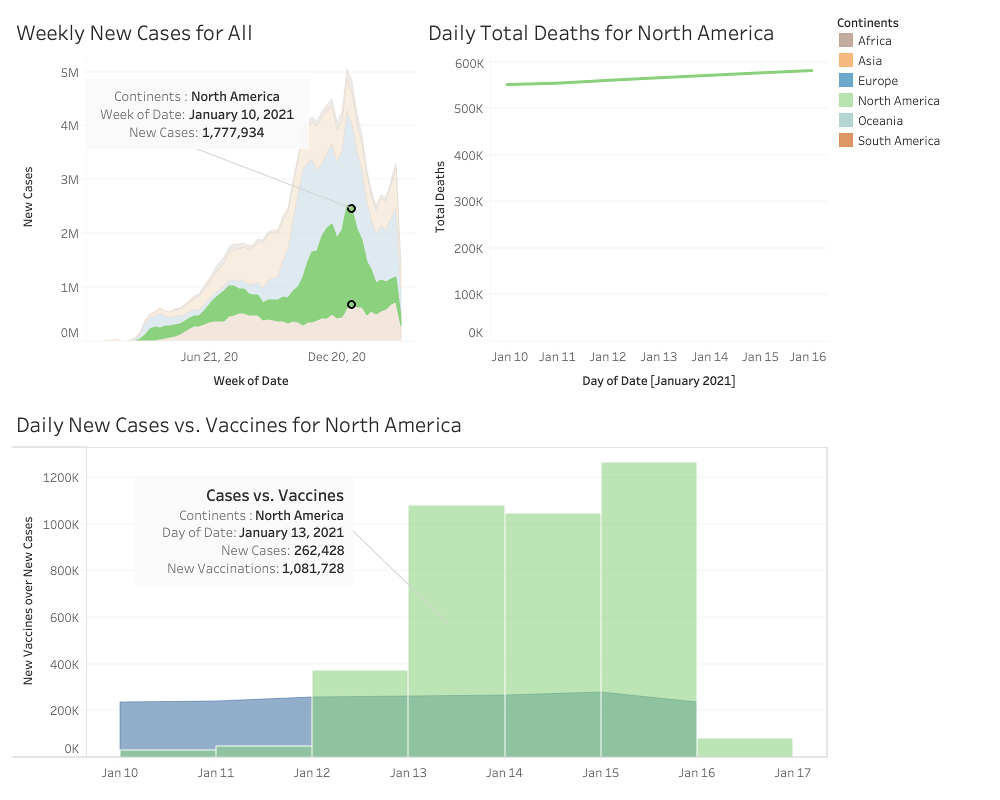
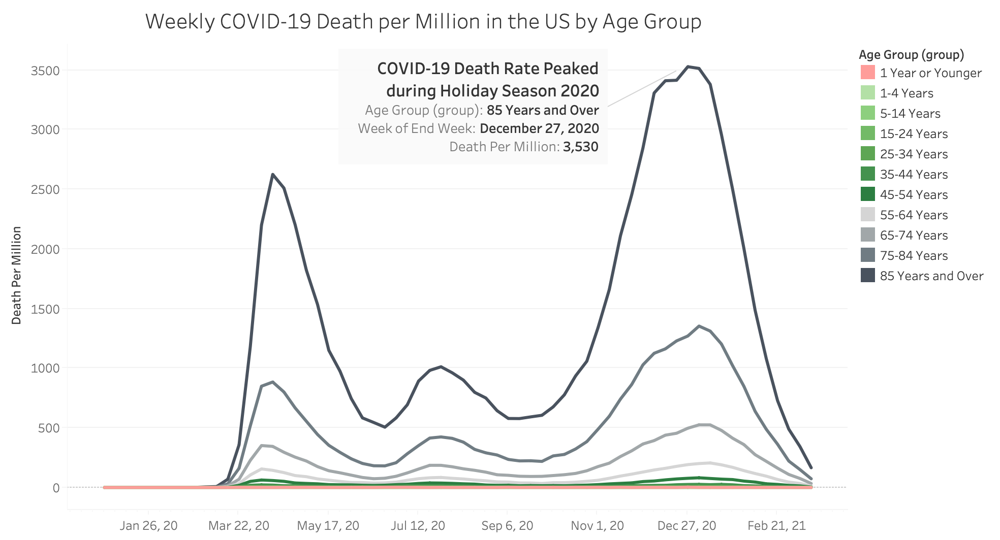

Consumer Studies


⋅⋅⋅⋅⋅⋅⋅⋅⋅⋅⋅⋅⋅⋅⋅⋅⋅⋅
Social Studies


⋅⋅⋅⋅⋅⋅⋅⋅⋅⋅⋅⋅⋅⋅⋅⋅⋅⋅
⋅⋅⋅⋅⋅⋅⋅⋅⋅⋅⋅⋅⋅⋅⋅⋅⋅⋅
⋅⋅⋅⋅⋅⋅⋅⋅⋅⋅⋅⋅⋅⋅⋅⋅⋅⋅
2021
US and world
COVID-19 records
published on CDC
and Our World in Data
OWD Dataset
date
continent
new cases
new deaths
new deaths per million
new vaccinations
population
CDC Dataset
week
age group
sex
COVID-19 deaths
population
75,994 daily records
of six continents
1/22/2020 to 3/23/2021
1408 weekly records
of the United States
12/29/2019 to 3/14/2021
Tableau
K-means Clustering
As we passed one-year anniversary of the onset of the global pandemic that disrupted the cadence of our routine life, affected livelihood for so many, and caused deaths of over 2.7 million people (up to 3/23/21), a look at the data collected over the past year can give us a sense of the impact that it made on a global year-long scale.
This is the landscape of how the pandemic spread throughout the world in the past year, after stay-home orders were issued nation after nation to bend the curve. Waves after waves, peaks after peaks, continent after continent, the virus grew rampant during the winter, showing exponential curves in Europe and North America. The highest peak on a single continent was recorded at over 2 million new cases in one week in Europe by November 1st, 2020 as the end of the week.
The deadliest week fell on January 24th, 2021, with close to a hundred thousand deaths in one week worldwide.
With all the science and technology advances collectively possessed among the institutions around the world, multiple vaccines were developed simaltaenously by the pharmaceautical companies and research groups around the clock to save lives against the velocity of the virus. It is truly a race between the human race and the virus. By the 2020 Christmas, the first vaccines were administered and from January, we saw the bending of the curves.
Zoom in to North America. The turning point of the war on the virus fell on January 10, 2021 week, with approximately 2-million new cases in a week and approaching 600-thousand total deaths and over 1 million daily vaccinations ramped up since January 13, 2021. On that day, the vaccines over new cases ratio exceeds 4 times.
Age is the biggest factor in COVID-19 death. This treemap gives a spatial sense of the death counts by age group up till the March 23rd, 2021 week. The older age group, the more casualty from COVID-19.
When normalized by death rate per million people, the COVID-19 impact on the older age group, especially those above 85 years old, is even more stark compared with younger groups.
COVID-19 is more deadly on men than on women. Throughout the curves of the pandemic, men were dying at higher rate than women. In the deadliest week in the US, over 5000 more men died than women from COVID-19. That is 18.7% more.
COVID-19 death risk stack view across age and gender shows the distribution of an exponential risk increase in proportion to age. This is the total COVID-19 death count (385,736) in 2020 per the population in the gender and age group at the year end of 2020.
Even if the clutering of Tableau's embedded K-means method separated out the 85 year old and above and men above 75 (8,510 deaths per million) from the rest of the age-gender group, we can see the fatal impact of COVID-19 by comparing it to the benchmark of 2018-2019 influenza for age group 65+ at 473 deaths per million. COVID-19 death rate for the 45-54 men exceeded the flu's deadliness.